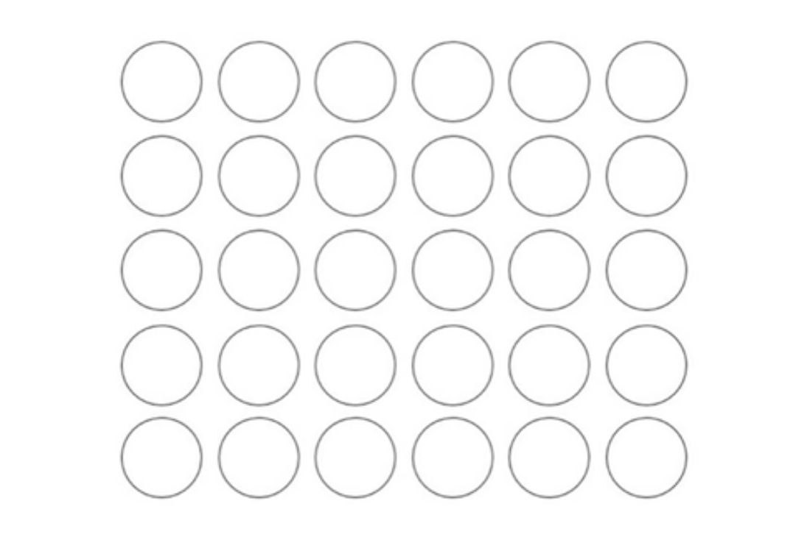

Today peoples always do something, like reading news, chatting, watch social media, and etc...
So, we are don't take a break, when we should. Sometimes it's need to stop. Let's try to take a new breath of life.
This thing is take a lot of your time. YouTube, news, social media - it's take their beginning from smartphones.
Recently, i found my mother's old Samsung Galaxy Ace La Fleur. And I understand, how technic can be beautiful. If i can, i will still use this smartphone, but sadly, it's a little bit old and damaged. This flower patterns and compact size makes it's smartphone with soul.
Ideas like this can be found in Frutiger Aero style, and maybe it's pretty good way to express that feeling.
Just agree, that you are use computer not to watch all of this things, because it feels more harder. Just make some experiment:
I have an article, called "Independency in digital world", where i am write about Internet addiction more, and how to beat it. This artcle based on my personal experiance, and methods, but in this paragraph, i would like think a little about role of Internet in personal life of everyone, and how it changes with time...
Computers can be connected to networks, like Internet. And it's beautiful, that today we can contact people in seconds, or found new people, or some shy person like me try to do something great.
Closer to mid 2000's, websites like MySpace and Facebook become popular.
Let's take some example, MySpace - it's social media that connect people by music interests. A lot of bands get their first popularity on MySpace, like Bring Me The Horizon, or Skrillex. And, as i think - it's a great example of Internet-project, where people create, share and listen. But some time passed, and MySpace become zombie.
But, there is a few websites, that try to recreate that atmosphere of MySpace, or Bandcamp website, where beautiful independent artist, like LukHash, She Official, AcousticLabs, C418, Ken Ashcorp, or even some underground artists like Acidgvrl and others publish their music, and people can support them, buy music, or just listen album for free. I like this website so much, maybe it's one of the last beautiful islands of Internet.
As i think, it's that reason, why I prefare services like this. Using Spotify, maybe you are have a better algorithms for searching music, but the same time you are got infinite music library, so you cannot concentrate on listening to a few artists, it's just infinite music flow. You are buy subscription, but you can pay to artists itself, buying their discography.
Personally, i think, that we should give more time for social life. We should stop use social media not because they are take our time for useless things, but firstly because they are don't create that community. Services like Discord better than Facebook and Instagram because they are connect people. Social life - it's the most important part of every person, so think about time you are waste on social media, it's time can be wasted around family or friend, even if they are far away, using Skype/Discord. Yes, it's a lot better to waste 2 hours in dialogue with friend, than waste the same time scrolling feed, or watching YouTube video. Instead of visiting the most popular websites, maybe you could find something interesting with Internet Maps, like Open Street Map, or Google Street View? Sometimes i found myself just looking for some places on maps for 30-40 minuites, and this is really awesome time.
Dream a little, and ask yourself - "How did people live before the internet?". They are live in the same houses and eat the same food, but something was different in their life.
There is also interesting website, that can answer a lot about Internet: End of the Internet.
It's better to just break in silence, without smartphone, music, or videogames, because it's the same work. You also can sleep this time.
A long time i have problem, that I "overstimulate" myself. As example, I am like music very much, and in past I've listen to music by albums, but recently, i finally understand, that it's a lot better listen to a few songs, and take a break, split my album listening to a few days, or maybe just try to found something, that i've never heard from my favorite composers, and this is so good feeling, when after work you are just take your phone, and play some songs, not so much, but I am have a lot of positive feelings. The same I do with films, and other pieces of art. It's not only way to take a break, but also a good motivation to create. Like i stop to take ideas from others, and start to make something yourself, unique, just from my soul.
Anyway, when you are feel tired, sad, it's not always because you are overstimulated, maybe you are feel lack of something. A big period of my life i've been very sad, i've do so much to avoid this feeling, but this worked not all the time. So... I found solution just a few weeks ago, when i write some girl, that i know a lot of time, but we are been in separation from each others. And, after some little conversation, i feel some lightness on my soul, like there is no more depressing feelings, like my view on the world become colorful... So yes, maybe you are can fix this, but just don't know, where is this solution...
self-limitations can help you relax and give you some time to understand your problems better.
When i limit myself in art, usually my mind creates some interesting ideas. Using only basic tools to archive your goal gives a really impressive result
Last years, ideas of minimalism and similar philosophical movements is getting more popular. People use minimalism in every parts of their life: apartaments, digital space, views on life, or even art. This way of life not always been good, as I understand this on myself.
It's really exciting, that people get rid of all unnecessary things, but sometimes it's getting too far, when person get rid of all around... Looking at this emptiness, sometimes it feel like sadness.
With coming of digital technology in our life, we are get rid of a lot in our houses. We are don't need to have player anymore, to watch films or listen to music. We are almost get rid of physical photography, we are don't need camera roll anymore, and this is helps us a lot.
It's personal opinion, but i am prefare to have phyical contact with things, like reading a paper book, we are feeling it better, and it's easier to concentrate. My friend synapsebreak describes it very good with example of notepad, and modern To-Do and note taking applications.
I also have some tips for minimal and comfy enviroment:
A little example of my beautiful and minimal XFCE desktop :D
You are use computer for work and fun, so please, don't setting up it every day, you are don't get some new knowledges about computers, but you are waste a lot of time.
Now we can try to make your comfy environment. Take a notepad and write something. Find some ways to have fun with it.
We should know our things and habits better, so make some list.
Also, we should have an easy way to store our data. I prefer to use txt documents or html lists. We talked about this method before in my article "Independence in the digital world".
I like this method so much, because you can write and style them as you want. All my bookmarks, favorite youtube content, wikipedia pages or just fun websites and articles are stored here. When i need to take a break from everything, i move my lists to usb flash drive, forget about them, and just enjoy the simplicity of this world. This really helped me with my anxiety.
It's also important to make a backpack with personal things. It's useful and easy to find all the things you have in a single place. If i need to leave my house, i have everything in my backpack. If i go on a long trip, i have some free space for my notebook and other useful things and memories from my friends.
These habits not only make my life simpler, but also change me, help me in hard moments, and cure my Internet-addiction.
I am like to play music and programming. But sometimes, when i want to take a break, i cannot, just because it's my only interests. When i don't play music instrument, i listen to music, when i don't programming, i am still use computer. If you are feel like this so long, you are going crazy. So, recently i understant, that you can find something new, that don't take so much time, but give you a time to break. Sometimes i like to draw some pixelart sketches, it's so relaxing and simple thing. You also should try to found something, it's also can help you in hard times.
It is simple, but very fun. You need to paint 5x6 grid with circles, and paint some objects around them. It's give you a lot of fun, and a good way to "kill time", if you need this.
The easiest way to do this - just make font size on your computer as large, as possible, in this way you can sit back from monitor, and in better position for spine.